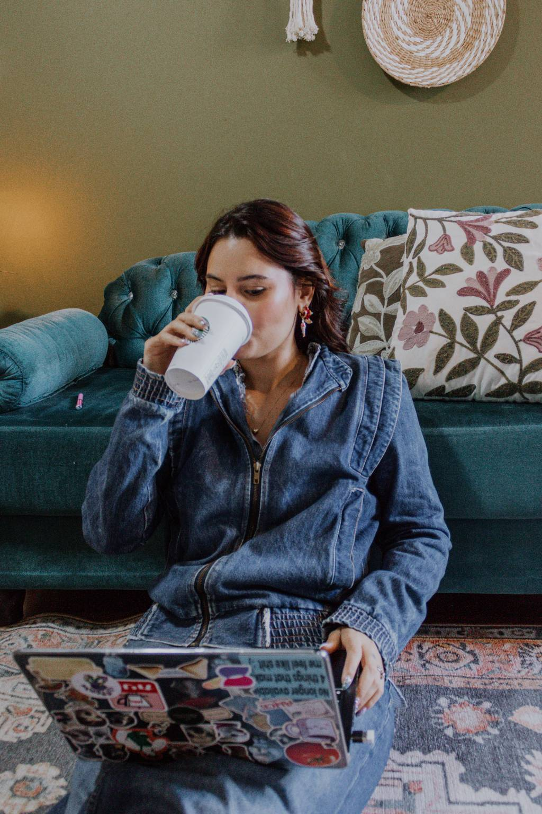

Psicoterapia baseada em evidências, com escuta acolhedora e ferramentas práticas para transformar a forma como você vive e enxerga a vida. Atendimento online e presencial.
Buscar apoio é um ato de coragem e cuidado consigo mesmo. Veja algumas questões que podemos trabalhar juntos.
Preocupações constantes, medo excessivo e crises que atrapalham seu dia a dia.
Cansaço emocional, sobrecarga e esgotamento que afetam corpo e mente.
Dificuldades nos vínculos afetivos, conflitos e padrões que se repetem.
Autocrítica excessiva, insegurança e dificuldade de reconhecer seu valor.
Sensação de vazio, desmotivação e a busca por propósito e direção na vida.
Apoio em perdas, transições e momentos difíceis que exigem reconstrução.
"A terapia pode te ajudar a compreender, ressignificar e transformar sua vida."
Sou Thamyres Sanflorian, psicóloga (CRP 06/216304), e acredito que cada pessoa carrega dentro de si a capacidade de transformar a própria história — às vezes só precisamos de um espaço seguro para isso.
Meu trabalho une a Terapia Cognitivo-Comportamental (TCC) e a Logoterapia, oferecendo um cuidado que é ao mesmo tempo prático e profundo: ferramentas concretas para o dia a dia, somadas a uma reflexão sobre o sentido daquilo que você vive.
Aquele que tem um porquê para viver pode suportar quase qualquer como.
Meu propósito é caminhar ao seu lado em direção a uma vida mais leve, consciente e com significado. Será um prazer te acompanhar nesse processo.
A combinação da ciência da TCC com a profundidade da Logoterapia cria um processo terapêutico completo e personalizado para você.
A TCC trabalha a relação entre pensamentos, emoções e comportamentos. Juntos, identificamos padrões que causam sofrimento e desenvolvemos ferramentas concretas para mudá-los, gerando resultados reais no seu dia a dia.
Criada por Viktor Frankl, a Logoterapia parte da busca pelo sentido. Mais do que aliviar sintomas, ela ajuda você a encontrar propósito, fazer escolhas conscientes e atravessar até os momentos mais difíceis com significado.
Em três passos, você dá início ao seu processo de cuidado e transformação.
Clique no botão do WhatsApp e me envie uma mensagem. Vou te responder com todo carinho.
Combinamos o melhor dia e horário para você, de forma online ou presencial.
Um espaço seguro e acolhedor para você se cuidar, se conhecer e transformar sua vida.

Não espere o momento perfeito. O melhor momento para cuidar de você é hoje.